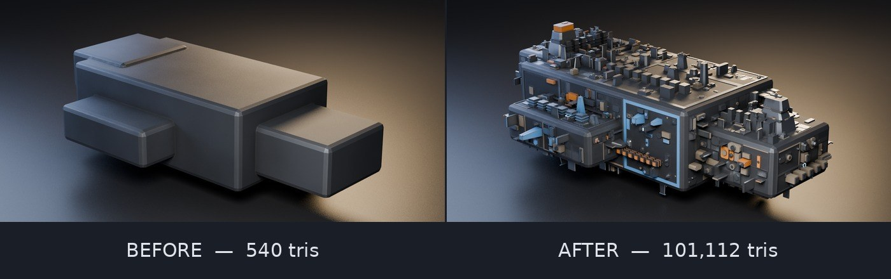
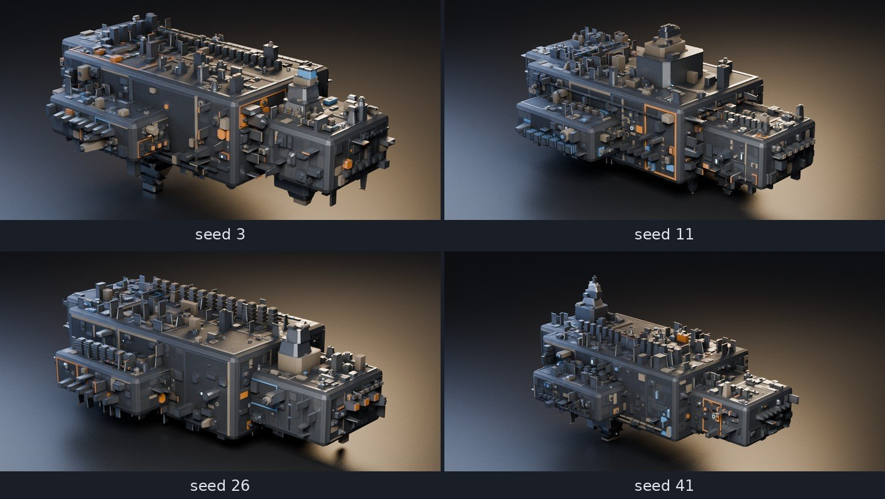

Tristan Muzzu
Blender add-ons for hard-surface modelling and game asset work.
I write tools for the parts of 3D work nobody enjoys. Panelling a hull by hand. Renaming two hundred objects. Checking scale for the fourth time because the last export came into Unity at 100x.
Everything here runs on Blender 3.6 through 5.2, and I check all five versions before anything goes out. Add-ons that quietly break on a version bump are the fastest way to lose people.
PanelForge
Procedural sci-fi hull plating. Point it at a hard-surface mesh and it builds panel layouts, recessed sections, slatted vents, raised blocks and blade fins, spread across five material slots.

Most greeblers spray detail evenly and you can always tell. This one steps plate depths in fixed increments instead of drifting them, gathers detail into hotspots the way actual hardware does, and skips some plating so bare hull shows through. Sixteen parameters and a seed. Same seed, same result, every time.

PanelForge 1.0.0
New media for the product page. It's rendered headless at 1080px, 64 samples, EEVEE, seed 3, so any of it rebuilds exactly.
The sweep runs the slider up and then back down, so what you're watching is one object changing rather than a row of separate renders.
What broke between Blender 3.6 and 5.2
The add-ons on this page get run on five Blenders, and doing that turns up things a single-version check never shows you. Every one of the three below had me hunting through my own code first. I measured all of it again this afternoon on 3.6.23, 4.2.23, 4.5.12, 5.0.1 and 5.2.0, so the figures below are from today rather than from my notes.
FBX export is dead on the 5.0.1 build my package manager ships. Any call to bpy.ops.export_scene.fbx raises AttributeError: 'ExportFBX' object has no attribute 'use_space_transform', thrown from line 606 of the bundled io_scene_fbx. Here's the part that took me ages to see. That operator declares 5 properties on 5.0.1, against 42 on 3.6.23 and 43 on the other three. It registers almost nothing, and then the exporter's own execute() reads an option its own operator never created. The identical export writes between 26,428 and 26,764 bytes on 3.6.23, 4.2.23, 4.5.12 and 5.2.0, from the factory startup scene, no complaints. So if your export script died and you're on a distro Blender, print len(bpy.ops.export_scene.fbx.get_rna_type().properties) before you go hunting through your own code. What I can't tell you is whether upstream 5.0 has this. I only know this packaged 5.0.1 does and that blender.org's 5.2.0 doesn't.
Action.fcurves stops existing, and later than I had it written down. My own note said 4.4. That was wrong: 4.5.12 still hands back three F-curves quite happily, and the attribute is gone on both 5.0.1 and 5.2.0. The new layers attribute turns up at 4.5.12, so 4.5 is the one version where both APIs answer and either style of code runs. Anything that walks action.fcurves to set interpolation throws on 5.x. The turntable add-on here got fixed by leaving the Action API alone altogether: set preferences.edit.keyframe_new_interpolation_type before inserting the keys, then put it back. That runs unchanged on all five.
Last one is small and it bit me anyway. bpy.app.version_string is not something you can parse. 3.6.23 returns "3.6.23" while 4.2.23 returns "4.2.23 LTS", so the suffix is on some builds and not others, and a script of mine ran int() over that last field and died. bpy.app.version gives you a tuple of integers. Use that instead.
None of this is exotic. It's what falls out of running the same script on every version you claim to support, which takes six seconds on this machine for twelve add-ons across five versions and is the only reason I know any of it. PanelForge, the paid one, goes through the same five.
Changing a generator without moving everybody's meshes
Yesterday I wrote up a slider in my own add-on that turned out to have three settings wearing twelve labels. Structural Bays runs 1 to 12, the core fed it through int(log2(n)) to get a recursion depth, and so 1, 2 and 3 all did the same thing, 4 through 7 all did the same thing, and 8 through 12 all did the same thing. Nine of the twelve positions were decoration. Today I fixed it. The fix took about twenty minutes and the part that took the rest of the afternoon was proving I hadn't moved anybody's existing output, which is the bit worth writing down.
Here's the problem with touching a procedural generator once it's out. People have files. If the same seed and the same settings stop producing the same mesh, the first anyone hears about it is that the ship they parked last month has quietly become a different ship. Blender won't warn them. There's no diff to read. So any change to the guts of one of these needs an answer to "what moved", and the answer has to be a measurement rather than a feeling.
Three things made that answerable, and none of them are specific to my add-on.
The first is to hash the vertices rather than count them. I ran the whole 1 to 12 sweep before the change and after it, and for each run I recorded the stats dictionary plus a SHA-256 over every vertex coordinate at six decimal places, truncated to sixteen characters so it fits in a table. That last bit matters more than it sounds. Before the change, settings 1, 2 and 3 all reported 262 plates and 11,388 triangles, which on its own only tells you three runs landed on the same counts. Counts collide. The hash 2fb72b58e395fee9 appearing three times tells you they're the same mesh, vertex for vertex, and that's the claim I actually wanted to make. I've been burned by counts on this project before: an early version of this generator passed every numeric gate I had and rendered as spikes shooting into space.
The second is to leave the random number generator alone until you know you're going to use it. The old splitting function checked its rectangle for size, then drew a random split position, then checked whether the split was legal. When it wasn't legal it returned the rectangle unsplit, having already consumed a number from the stream. Every seed is a stream, and one extra draw shifts everything downstream of it. My rewrite pulls the "is this rectangle even big enough" test in front of the draw, so a rectangle that can't divide costs nothing and the sequence stays where it was. If you're refactoring anything seeded, that ordering is the thing to check first. It's invisible in a diff review and it changes every result.
The third is the one I'm pleased with. The old default was 3, which log2 collapsed to one split. The new code splits to a literal count, so a default of 2 performs exactly one split, same rectangle, same single draw from the same stream. Pick the new default to land on the old code path and the default mesh doesn't move at all. I checked rather than assumed: hash 2fb72b58e395fee9 before and after, 262 plates, 74 vents, 28 fins, 18 risers, 50 greebles, 11,388 triangles, 7,120 vertices, 5,106 faces, all identical. Everything I've published, the store images and the demo clip and the figures in the manual, was made at defaults, so none of it needed regenerating. That was luck as much as planning. If my images had used a hand-set value I'd have spent this evening re-rendering. What I can't do is protect a file where somebody set the thing to 7 by hand, because 7 used to be an alias for one of the three steps and now it isn't, so that mesh does move and the changelog says so in as many words.
What the setting does now, measured on a 1.55 by 0.92 by 0.55 metre box at seed 3: settings 1 through 12 give 6, 12, 18, 24, 30, 36, 42, 48, 54, 60, 64 and 66 bays. Six faces, so it's six times the setting until the faces run out of room somewhere past 10 and it caps. Plate counts go 38, 69, 96, 120, 164, 181, 205, 222, 228, 234, 248, 260. On the five-part hull I use for the listing renders, all twelve settings produce twelve distinct vertex hashes, where before there were three.
Then a regression test, and I made it fail before I trusted it. This project has been wrong six times about a green check that had no way to go red, mostly because Blender exits 0 even when a --python script dies with an unhandled exception. So the new case sweeps bays 1 through 8 and asserts every step increases, and before committing I put the log2 line back and watched it print "flat steps in [12, 12, 12, 18, 18, 18, 18, 24]" and drop the suite to 17 of 18. Then I put it back. A check you've only ever seen pass is a check you're guessing about.
The suite is 18 edge cases now, run on 3.6.23, 4.2.23, 4.5.12, 5.0.1 and 5.2.0, which is 90 runs. All green. The one thing I can't tell you is whether anyone would have noticed the original bug on their own, because nobody has bought this yet.
Free add-ons
Twelve small ones, MIT licensed, no strings. Each is a single
.py file. Download it, then
Edit → Preferences → Add-ons → Install. The panels
turn up in the viewport sidebar (press N) under BTools.
Download all (zip) Source on GitHub
| Add-on | What it does | |
|---|---|---|
| Asset Check | Checks transforms, scale, manifold geometry and UVs before you export, and fixes the mechanical stuff for you | .py |
| Surface Scatter | Scatters instances over a surface, weighted by face area, with a slope limit so nothing sticks to cliffs | .py |
| Quick Export | glTF or FBX with the Unity and Unreal axis settings already right. One file per object if you want | .py |
| Mesh Stats | Live triangle, n-gon, loose vertex and manifold counts, with a button that selects the n-gons for you | .py |
| Auto Frame | Puts the camera where your selection actually fills the frame. Fits real vertices, not the bounding box | .py |
| Seam by Angle | Marks seams on anything sharper than a threshold, then unwraps | .py |
| Turntable | Orbit animation in one click. Reuses its pivot, linear interpolation, no stutter on the loop | .py |
| Origin Tools | Origin to bottom, centre or world zero. Plus drop to floor, which I use constantly | .py |
| Batch Rename | Pattern renaming with numbering, and find and replace. Keeps mesh data names in sync, which exporters care about | .py |
| Material Slots | Drops slots nothing uses and points .001 duplicates back at the original | .py |
| Collection Sort | Sorts objects into collections by type, name prefix or first material | .py |
| Align & Distribute | Align on any axis by min, centre or max. Space things evenly without doing the maths | .py |
How I test them
Every add-on gets installed, switched on, run against real geometry and unloaded again, on all five Blender versions. That's sixty combinations each time I change something. It's a lot of ceremony for free tools, but it's the only way I'm willing to put a version range on something.
It earns its keep. The turntable tool worked fine on 3.6 and 4.2 and blew
up on 5.x, because Action.fcurves stopped existing when
Blender moved Actions over to layers and slots in 4.4. Without the matrix
I'd have shipped it and found out from a bug report instead.
The test script is in the repo if you want to run it yourself.